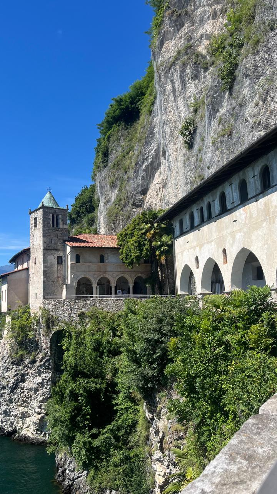
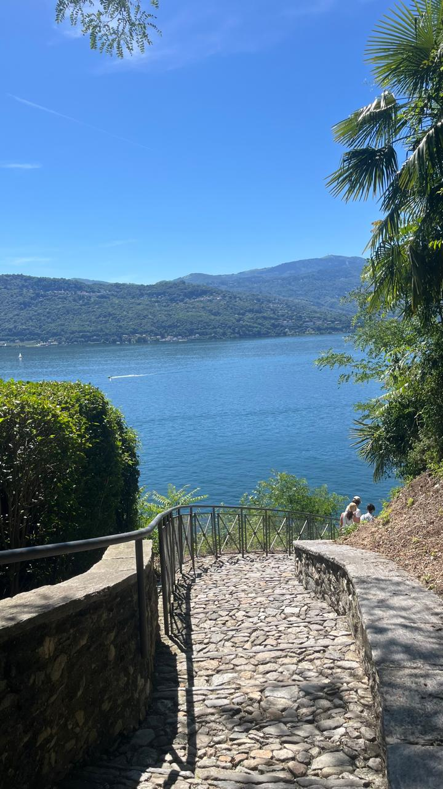
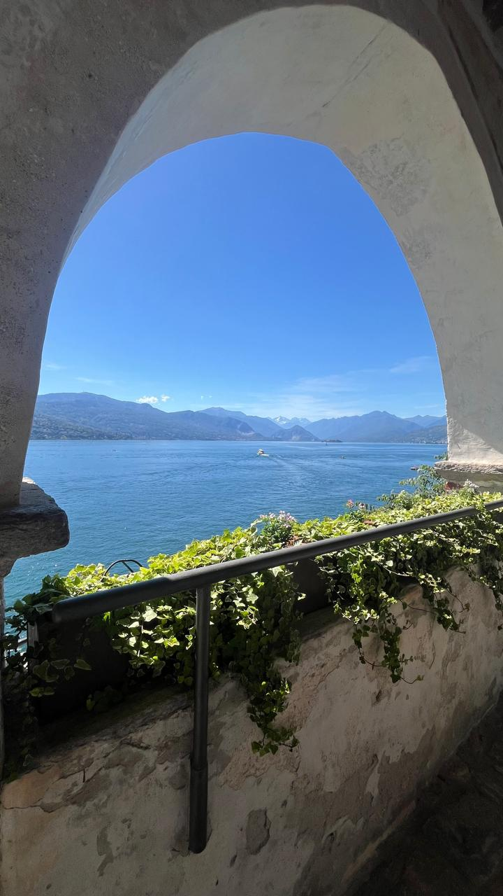
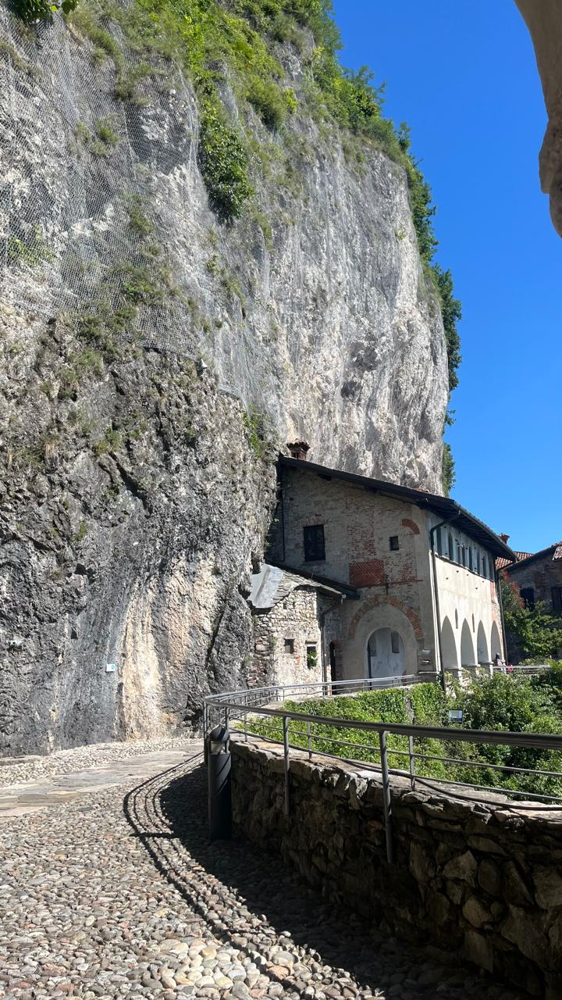
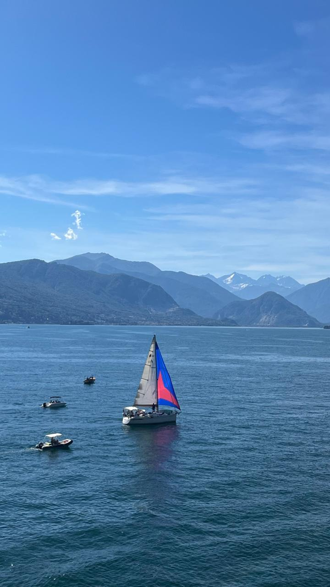
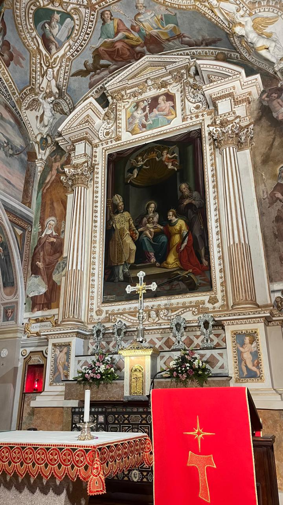
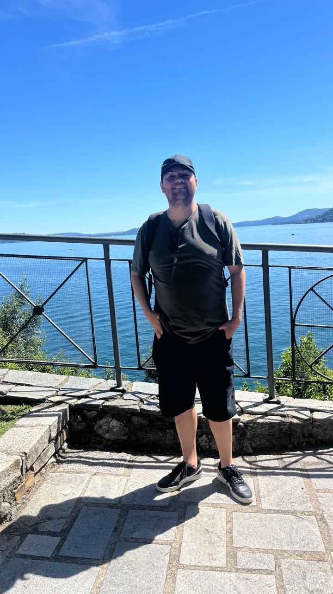
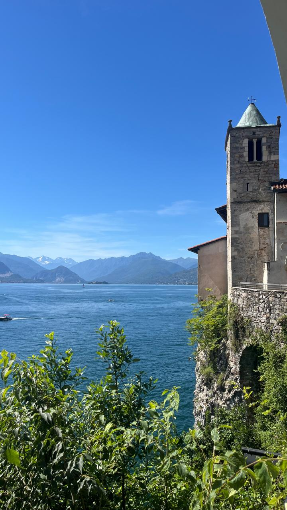
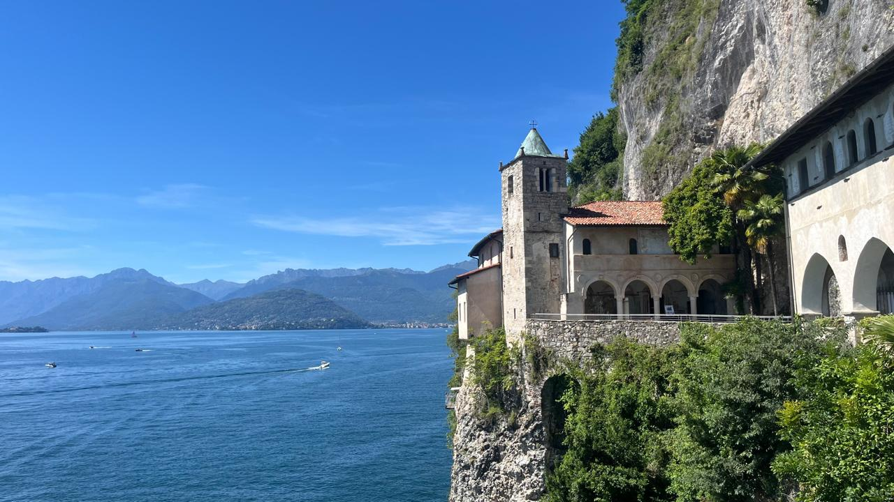

Lago Maggiore
O Eremo di Santa Chiara é um dos lugares mais silenciosos, contemplativos e especiais do Lago Maggiore. Escondido entre as montanhas de Ghiffa e com vista ampla para o lago, ele combina espiritualidade, natureza e uma atmosfera que parece suspensa no tempo. É um daqueles cantinhos que só quem conhece bem a região descobre — e que transforma completamente a experiência do Lago Maggiore.









Milão → Lago Maggiore (Ghiffa / Verbania)
Saindo de Gorla, pegue a linha vermelha (M1) até Loreto. Lá, faça a baldeação para a linha verde (M2) e siga até a estação Centrale.
Na Estação Central de Milão, compre seu bilhete de trem para Verbania-Pallanza.
A viagem dura cerca de 1h15 a 1h30, com bilhetes entre 7 e 12 euros.
Ao chegar em Verbania, pegue um ônibus local ou táxi até Ghiffa — o Eremo fica em uma área alta, cercada por floresta e com vista panorâmica.
Pontos Turísticos Imperdíveis
- Eremo di Santa Chiara: Um eremitério histórico com vista aberta para o Lago Maggiore. Silêncio, natureza e espiritualidade num só lugar.
- Sacro Monte di Ghiffa (UNESCO): Conjunto de capelas e trilhas com vistas incríveis, perfeito para caminhadas leves.
- Villa Taranto: Jardins botânicos famosos pela variedade de flores e paisagismo impecável.
- Isola Madre: Uma ilha-jardim com palácio histórico e pavões soltos.
- Isola Bella: Palácio barroco e jardins em terraços — um dos cenários mais icônicos do lago.
- Lungolago di Verbania: Passeio à beira do lago com cafés, barcos e vista para as montanhas.
Gastronomia no Lago Maggiore
- Pesce persico (peixe do lago)
- Polenta e brasato
- Formaggi ossolani (queijos de montanha)
Restaurantes recomendados:
- La Canfora (Ghiffa) — vista linda e pratos regionais.
- Osteria del Castello (Verbania) — cozinha local bem executada.
- Gelateria L’Insolita (Verbania) — sorvetes artesanais ótimos.
Dica dos Ussinhos 🐻💡
O Eremo di Santa Chiara é um passeio perfeito para quem busca calma, natureza e vistas panorâmicas. Se você já visitou as ilhas e as cidades principais do Lago Maggiore, esse é o tipo de lugar que transforma o roteiro — um “segredo” que só quem explora além do básico descobre.